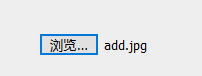
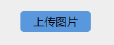
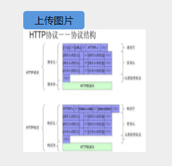

我们也都知道上传图片的样子是这样的（选择前）是这样的（选择后）。
先在HTML设置图片上传
<form action="" method="">
<input type="file" id="file">
<label for="file">上传图片</label>
<img src="" alt="" id="myimg"/>
</form>然后编辑css样式
#file{
display: none;
}
#file + label{
display: inline-block;
width: 100px;
height: 30px;
background-color: rgb(90, 152, 222);
text-align: center;
line-height: 30px;
border-radius: 5px;
}
img{
display: none;
width: 200px;
height: 200px;
}最后设置js上传图片后的变化
var myimg = document.getElementById('myimg');
var file = document.getElementById('file');
file.onchange = function(){
var url;
var agent = navigator.userAgent; //检测浏览器版本
if (agent.indexOf("MSIE")>=1) {
url = file.value;
} else if(agent.indexOf("Firefox")>0) {
url = window.URL.createObjectURL(file.files.item(0));
} else if(agent.indexOf("Chrome")>0) {
url = window.URL.createObjectURL(file.files.item(0));
}
myimg.src = url
myimg.style.display = "block";
}最终呈现出来的结果如下：选择前选择后。
本文属于简单的小白文，只是讲述知识点，如有帮助，切勿复制，请自行修改使用